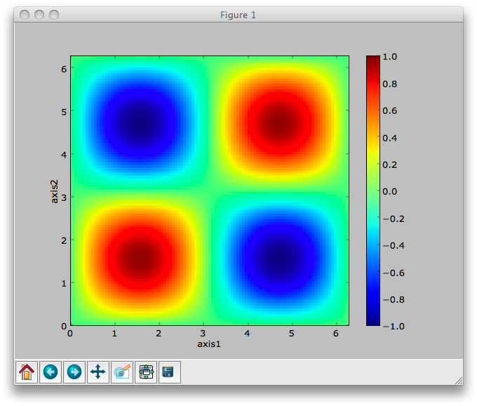

NeXpy¶
NeXpy provides a high-level python interface to NeXus data contained within a simple GUI. It is designed to provide an intuitive interactive toolbox allowing users both to access existing NeXus files and to create new NeXus-conforming data structures without expert knowledge of the file format.
Installation¶
WARNING: NeXpy is in the early stages of development, and so there has been no stable release yet. It is available for testing purposes only.
To check out the latest version from the GitHub repository and install the NeXpy package to the standard python site-packages directory,:
> git clone https://github.com/nexpy/nexpy.git
> cd nexpy
> python setup.py install
This assumes that the standard Python script directory is in your default path.
The source code can also be viewed on the NeXpy GitHub.
Installation Issues¶
Locating the NeXus library¶
NeXpy utilizes the python wrapper to the NeXus C API distributed with the standard NeXus distribution. This wrapper needs the location of the libNeXus precompiled binary. It looks in the following places in order::
Location |
Operating System |
|---|---|
os.environ['NEXUSLIB'] |
All |
directory containing napi.py |
All |
os.environ['NEXUSDIR']\bin |
Windows |
os.environ['LD_LIBRARY_PATH'] |
Unix |
os.environ['DYLD_LIBRARY_PATH'] |
Darwin |
PREFIX/lib |
Unix and Darwin |
/usr/local/lib |
Unix and Darwin |
/usr/lib |
Unix and Darwin |
On Windows it looks for one of libNeXus.dll or libNeXus-0.dll.
On OS X it looks for libNeXus.dylib
On Unix it looks for libNeXus.so
NEXUSDIR defaults to r’C:\Program Files\NeXus Data Format’. PREFIX defaults to /usr/local, but is replaced by the value of –prefix during configure.
The import will raise an OSError exception if the library wasn’t found or couldn’t be loaded. Note that on Windows in particular this may be because the supporting HDF5 dlls were not available in the usual places.
If you are extracting the nexus library from a bundle at runtime, set os.environ[‘NEXUSLIB’] to the path where it is extracted before the first import of nexpy.
Required Libraries¶
mxml (XML NeXus files only)
PySide v1.1.0 (GUI only)
iPython v0.13 (GUI only)
pyspec (SPEC reader only)
Running NeXpy¶
There are two ways of using the NeXpy interface to NeXus files.
Within a standard python or ipython shell.
Using the GUI shell
Python Shell¶
$ python
Python 2.7.2 (default, Oct 11 2012, 20:14:37)
[GCC 4.2.1 Compatible Apple Clang 4.0 (tags/Apple/clang-418.0.60)] on darwin
Type “help”, “copyright”, “credits” or “license” for more information.
>>> from nexpy.api import nexus
>>> a=nexus.load('data/chopper.nxs')
GUI Shell¶
To run the NeXpy GUI, type
> nexpy
 The GUI
contains three main panes:
The GUI
contains three main panes:
Tree Pane:This contains the tree structure of NeXus files opened in the File menu and/or any NXroot and NXentry groups created within the shell.
Plot Pane:Any NXdata or NXmonitor group can be plotted in this pane by right-clicking on the relevant node in the tree.
Shell Pane:This is a regular python shell, with both Numpy and NeXpy already imported (as * so no prefixes are necessary). Any assignments to items in the tree pane are automatically reflected in the tree pane, and new NXroot, NXentry, or NXdata objects are added to the tree. Currently, it is not possible to plot directly from the shell pane, but this will be added in the future.
There are a number of useful features available when running NeXpy within the GUI shell.
Data can be loaded with the <File:Open> menu item using a standard file browser window.
All current NeXus data trees are easy to inspect in the pane on the upper left side. Hovering over a data item produces a tooltip containing a list of all the item’s children.
Newly created group can be added to the tree at any time.
Any changes to data sets in the scripting window will be reflected within the tree pane, including the creation of new NXroot or NXentry groups.
NXdata and NXmonitor plots can be displayed by right-clicking and choosing ‘Plot’.
Axis limits are set by a series of slider bars.
The scripting shell provides convenient autocompletion, and automatically displays function docstrings as a tooltip when you open the function parentheses.
Planned Enhancements¶
Editing data items in the tree within an editor pane.
NeXus Interface¶
Loading NeXus Data¶
The entire tree structure of a NeXus file can be loaded by a single command.
>>> from nexpy.api import nexus
>>> a=nexus.load('sns/data/ARCS_7326_tof.nxs')
The assigned variable now contains the entire tree structure of the file, which can be displayed by printing the ‘tree’ property.
>>> print a.tree
root:NXroot
@HDF5_Version = 1.8.2
@NeXus_version = 4.2.1
@file_name = ARCS_7326_tof.nxs
@file_time = 2010-05-05T01:59:25-05:00
entry:NXentry
[data:NXdata](data:NXdata)
data = float32(631x461x4x825)
@axes = rotation_angle:tilt_angle:sample_angle:time_of_flight
@signal = 1
rotation_angle = float32(632)
@units = degree
sample_angle = [ 210. 215. 220. 225. 230.]
@units = degree
tilt_angle = float32(462)
@units = degree
time_of_flight = float32(826)
@units = microsecond
run_number = 7326
sample:NXsample
pulse_time = 2854.94747365
@units = microsecond
Individual data items are immediately available from the command-line.
>>> print a.entry.run_number
7326
Note that only the tree structure and smaller data sets are read into memory to avoid using up memory unnecessarily. In the above example, only the types and dimensions of the larger data sets are displayed in the tree. However, the filename is also stored, so the data can be loaded as soon as it is needed, either as a complete array or as a series of slabs.
Creating NeXus Data¶
It is just as easy to create new NeXus data sets from scratch using Numpy arrays. The following example shows the creation of a simple function, which is then saved to a file.
>>> import numpy as np
>>> x=y=np.linspace(0,2*np.pi,101)
>>> X,Y=np.meshgrid(x,y)
>>> z=np.sin(X)*np.sin(Y)
>>> a=NXdata(z,[x,y])
>>> a.save('function.nxs')
This file can then be loaded again.
>>> b=nexus.load('function.nxs')
>>> print b.tree
root:NXroot
@HDF5_Version = 1.8.2
@NeXus_version = 4.2.1
@file_name = function.nxs
@file_time = 2010-05-10T17:01:13+01:00
entry:NXentry
[data:NXdata](data:NXdata)
axis1 = float64(101)
axis2 = float64(101)
signal = float64(101x101)
@axes = axis1:axis2
@signal = 1
Note that the save() method automatically wraps any valid NeXus data in an NXentry group, in order to produce a standard-compliant file.
NeXus Fields¶
NeXus data values are stored in NeXus objects of class ‘NXfield’. The NXfield class wraps standard Numpy arrays, scalars, and python strings so that data attributes can be associated with them. There are two ways to create an NXfield.
Explicit initialization. The data value is given by the first positional argument, and may be a python scalar or string, or a Numpy array. In this method, keyword arguments can be used to define NXfield attributes.
>>> x = NXfield(np.linspace(0,2*np.pi,101), units='degree')
Implicit initialization as the child of a NeXus group. The assigned values are automatically converted to an NXfield.
>>> a.entry.sample.temperature=40.0
>>> a.entry.sample.temperature
NXfield(name=temperature,value=40.0)
NXfield attributes can be assigned after creating the NXfield. Note that attribute names must not start with ‘nx’ to avoid name clashes.
>>> a.entry.sample.temperature.units='K'
The actual values of an NXfield are stored in the ‘nxdata’ attribute. If the NXfield is read in from a data file, this attribute is not input if the array size is large to avoid using up memory unnecessarily. It will, however, be read in if the value is accessed for plotting or manipulating data. If this will cause a memory exception, the data should be read in as a series of slabs using the nxget method.
>>> with root.NXentry[0].data.data as slab:
Ni,Nj,Nk = slab.shape
size = [1,1,Nk]
for i in range(Ni):
for j in range(Nj):
value = slab.get([i,j,0],size)
Data values can be returned converted to different units if the ‘units’ attribute has been set.
>>> phi = x.nxdata_as(units='radian')
>>> y = NXfield(np.sin(phi))
NeXus Groups¶
NeXus groups are defined as subclasses of the NXgroup class. Apart from the class name, they behave identically except for the NXdata, NXmonitor, and NXlog groups, which have extra methods defined. The initialization parameters can be used to populate the group with other predefined NeXus objects, either groups or fields.
>>> temperature = NXfield(40.0, units='K')
>>> sample = NXsample(temperature=temperature)
>>> print sample.tree
sample:NXsample
temperature = 40.0
units = K
Note that, in this example, it was necessary to use the keyword form to add the NXfield ‘temperature’ since its name is otherwise undefined within the NXsample group. This name is set automatically if the NXfield is added as an attribute assignment.
>>> sample = NXsample()
>>> sample.temperature=NXfield(40.0, units='K')
sample:NXsample
temperature = 40.0
units = K
The objects in NeXus groups, which can be NXfields or other NXgroups, can also be assigned and referenced as dictionary items.
>>> sample[“temperature”] = 40.0
>>> sample.keys()
['temperature']
NXdata Groups
NXdata groups contain data ready to be plotted. That means that the
group should consist of an NXfield containing the data and one or more
NXfields containing the axes. NeXus defines a method of associating axes
with the appropriate dimension, but NeXpy provides a simple constructor
that implements this method automatically.
This was already demonstrated in the example above, reproduced here:
>>> import numpy as np
>>> x=y=np.linspace(0,2*np.pi,101)
>>> X,Y=np.meshgrid(y,x)
>>> z=np.sin(X)*np.sin(Y)
>>> a=NXdata(z,[x,y])
The first positional argument is an NXfield or Numpy array containing the data, while the second is a list containing the axes, again as NXfields or Numpy arrays. In this example, the names of the arrays have not been defined within an NXfield so default names were assigned.
>>> print a.tree
[data:NXdata](data:NXdata)
axis1 = float64(101)
axis2 = float64(101)
signal = float64(101x101)
@axes = axis1:axis2
@signal = 1
However, names can be assigned explicitly when creating the NXfield through the ‘name’ attribute.
>>> phi=np.linspace(0,2*np.pi,101)
>>> data=np.sin(phi)
>>> a=NXdata(NXfield(data,name='intensity'),(NXfield(phi,name='polar_angle')))
>>> print a.tree
[data:NXdata](data:NXdata)
intensity = float64(101)
@axes = polar_angle
@signal = 1
polar_angle = float64(101)
Adding NeXus Data to the Tree View¶
If you create a NeXus group dynamically in the iPython shell, it can be added to the tree view using the tree’s add method.
>>> a=NXroot()
>>> a.entry = NXentry()
>>> tree.add(a)
If the group is not an NXroot group, the data will be wrapped automatically in an NXroot group and given a default name that doesn’t conflict with existing tree nodes, e.g., w4.
Plotting NeXus Data¶
Python Shell¶
NXdata, NXmonitor, and NXlog groups all have a plot method, which automatically determines what should be plotted.
>>> data.plot()
 If the data is one-dimensional, it is possible to overplot more than one data set using ‘over=True’. Conventional Matplotlib keywords can be used to change markers and colors.
>>> data.plot(log=True)
>>> data.plot(over=True, log=True, color='r')
GUI Shell¶
NXdata, NXmonitor, and NXlog data can be plotted by right-clicking on the group within the tree. The plot pane contains a toolbar to change axis or signal intensity limits. The slider provides a graphical way of setting minimum and/or maximum values or they can be typed into the text boxes. There are two checkboxes:
Lock:If the maximum and/or minimum values are not set to the limits, then this checkbox locks the difference between the two. This checkbox disables setting of the minimum value. You can step through the z-values with automatic replots by selecting the maximum box and using the keyboard up and down arrows or by clicking the box arrows.
Autoscale: When stepping through the z-values, this checkbox determines whether the plot should change the color scale.
Manipulating NeXus Data¶
Slicing¶
NXfield¶
A slice of an NXfield can be obtained using the usual python indexing syntax.
>>> x=NXfield(np.linspace(0,2*np.pi,101))
>>> print x[0:51]
[ 0. 0.06283185 0.12566371 ..., 3.01592895 3.0787608 3.14159265]
If either of the indices are floats, then the limits are set by the values themselves (assuming the array is monotonic).
>>> print x[0.5:1.5]
[ 0.50265482 0.56548668 0.62831853 ..., 1.38230077 1.44513262 1.50796447]
NXdata¶
It is also possible to slice whole NXdata groups. In this case, the slicing works on the multidimensional NXfield, but the full NXdata group is returned with both the signal data and the associated axes limited by the slice parameters. If either of the limits along any one axis is a float, the limits are set by the values of the axis.
>>> a=NXdata(np.sin(x),x)
>>> a[1.5:2.5].x
NXfield(name=x,value=[ 1.57079633 1.72787596 1.88495559 ..., 2.19911486 2.35619449])
Unless the slice reduces one of the axes to a single item, the rank of the data remains the same. To project data along one of the axes, and so reduce the rank by one, the data can be summed along that axis using the nxsum() method. This employs the Numpy array sum() method.
>>> x=y=NXfield(np.linspace(0,2*np.pi,41))
>>> X,Y=np.meshgrid(x,y)
>>> a=NXdata(np.sin(X)*np.sin(Y), (x,y))
>>> print a.tree
[data:NXdata](data:NXdata)
axis1 = float64(41)
axis2 = float64(41)
signal = float64(41x41)
@axes = axis1:axis2
@signal = 1
>>> print a.sum(0).tree
[data:NXdata](data:NXdata)
axis2 = float64(41)
signal = float64(41)
@axes = axis2
@long_name = Integral from 0.0 to 6.28318530718
@signal = 1
It is also possible to slice whole NXdata groups. In this case, the slicing works on the multidimensional NXfield, but the full NXdata group is returned with both the signal data and the associated axes limited by the slice parameters. If either of the limits along any one axis is a float, the limits are set by the values of the axis.
>>> a=NXdata(np.sin(x),x)
>>> a[1.5:2.5].x
NXfield(name=x,value=[ 1.57079633 1.72787596 1.88495559 ..., 2.19911486 2.35619449])
Unless the slice reduces one of the axes to a single item, the rank of the data remains the same. To project data along one of the axes, and so reduce the rank by one, the data can be summed along that axis using the nxsum() method. This employs the Numpy array sum() method.
>>> x=y=NXfield(np.linspace(0,2*np.pi,41))
>>> X,Y=np.meshgrid(x,y)
>>> a=NXdata(np.sin(X)*np.sin(Y), (x,y))
>>> print a.tree
[data:NXdata](data:NXdata)
axis1 = float64(41)
axis2 = float64(41)
signal = float64(41x41)
@axes = axis1:axis2
@signal = 1
>>> print a.sum(0).tree
[data:NXdata](data:NXdata)
axis2 = float64(41)
signal = float64(41)
@axes = axis2
@long_name = Integral from 0.0 to 6.28318530718
@signal = 1
Arithmetic Operations¶
NXfield¶
Arithmetic operations can be applied to NXfield objects in much the same way as scalars or Numpy arrays that they contain. This includes addition, subtraction, multiplication and division, either with other NXfield objects or to scalar numbers or Numpy arrays.
>>> x=NXfield(array((1.5,2.5,3.5),name='x')
>>> x
NXfield(name=x,value=[ 1.5 2.5 3.5])
>>> x+1
NXfield(name=x,value=[ 2.5 3.5 4.5])
>>> 2*x
NXfield(name=x,value=[ 3. 5. 7.])
>>> x+x
NXfield(name=x,value=[ 3. 5. 7.])
>>> x-x
NXfield(name=x,value=[ 0. 0. 0.])
>>> x/x
NXfield(name=x,value=[ 1. 1. 1.])
NXdata¶
Similar operations can also be performed on whole NXdata groups. If two NXdata groups are to be added, the rank and dimension sizes of the main signal array must match (although the names could be different).
>>> y=NXfield(np.sin(x),name='y')
>>> y
NXfield(name=y,value=[ 0.99749499 0.59847214 -0.35078323])
>>> a=NXdata(y,x)
>>> print a.tree
[data:NXdata](data:NXdata)
x = [ 1.5 2.5 3.5]
y = [ 0.99749499 0.59847214 -0.35078323]
@axes = x
@signal = 1
>>> print (a+1).tree
[data:NXdata](data:NXdata)
x = [ 1.5 2.5 3.5]
y = [ 1.99749499 1.59847214 0.64921677]
@axes = x
@signal = 1
>>> print (2*a).tree
[data:NXdata](data:NXdata)
x = [ 1.5 2.5 3.5]
y = [ 1.99498997 1.19694429 -0.70156646]
@axes = x
@signal = 1
>>> print (a+a).tree
[data:NXdata](data:NXdata)
x = [ 1.5 2.5 3.5]
y = [ 1.99498997 1.19694429 -0.70156646]
@axes = x
@signal = 1
>>> print (a-a).tree
[data:NXdata](data:NXdata)
x = [ 1.5 2.5 3.5]
y = [ 0. 0. 0.]
@axes = x
@signal = 1
>>> print (a/2).tree
[data:NXdata](data:NXdata)
x = [ 1.5 2.5 3.5]
y = [ 0.49874749 0.29923607 -0.17539161]
@axes = x
@signal = 1
If data errors are included in the NXdata group (with an additional array named ‘errors’), then the errors are propagated according to the operand.
>>> print a.tree
[data:NXdata](data:NXdata)
errors = [ 0.99874671 0.77360981 0.59226956]
x = [ 1.5 2.5 3.5]
y = [ 0.99749499 0.59847214 0.35078323]
@axes = x
@signal = 1
>>> print (a+a).tree
[data:NXdata](data:NXdata)
errors = [ 1.41244114 1.09404949 0.83759564]
x = [ 1.5 2.5 3.5]
y = [ 1.99498997 1.19694429 0.70156646]
@axes = x
@signal = 1